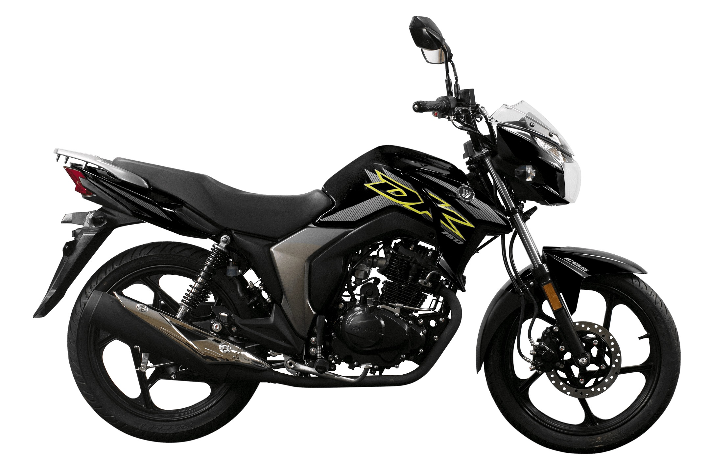

A Suzuki Haojue DK 150 é Boa para Uso Urbano?

Introdução à Suzuki Haojue DK 150
A Suzuki Haojue DK 150 é uma moto street de entrada, parceria entre Suzuki e Haojue, popular no Brasil por seu preço acessível e simplicidade. Muitos se perguntam: a Suzuki Haojue DK 150 é boa para uso urbano? Sim, ela se destaca em cidades por sua agilidade, economia e baixa manutenção, ideal para deslocamentos diários como trabalho ou faculdade. Lançada para competir com modelos como Honda CG 160, ela oferece motor de 150cc com injeção eletrônica, entregando cerca de 11,5 cv de potência.
Em ambientes urbanos como São Paulo ou Belo Horizonte, onde o tráfego é intenso, a DK 150 brilha pela maneabilidade. Seu design compacto (peso ~110 kg) facilita manobras em ruas estreitas e estacionamentos lotados.
Desempenho e Conforto na Cidade
No uso urbano, a Suzuki Haojue DK 150 é boa graças ao torque em baixas rotações, perfeito para acelerações em semáforos e subidas leves. Velocidade máxima ~100 km/h é suficiente para vias expressas urbanas, sem vibrações excessivas. O conforto vem da posição ereta de pilotagem, banco macio e suspensão que absorve buracos comuns em ruas brasileiras.
Proprietários relatam que ela lida bem com o "para e anda" da cidade, com freios a disco dianteiro oferecendo parada segura. No entanto, para garupa, o banco é básico – adicione encosto para mais conforto em trajetos longos urbanos.
Consumo e Economia no Uso Urbano
Um dos pontos fortes: consumo médio de 35-40 km/l no ciclo urbano, graças à injeção eletrônica. Isso torna a Suzuki Haojue DK 150 boa para uso urbano econômico, com tanque de 12 litros permitindo ~450 km de autonomia. Em comparação à Yamaha Factor 150 (similar), ela é ligeiramente mais eficiente em baixa velocidade.
Custos: manutenção anual ~R$ 600-900, com peças baratas e rede de assistência crescente. Seguro varia de R$ 500-800/ano, dependendo da região. Para Muzambinho-MG ou cidades menores, onde combustível é mais barato, a economia é ainda maior.
Vantagens e Desvantagens para Cidade
Vantagens: Preço inicial ~R$ 12.000-14.000 em 2026, painel digital simples, partida elétrica e baixa depreciação. É boa para iniciantes pela estabilidade em curvas urbanas. Desvantagens: Ausência de ABS (opcional em versões), ruído do motor em alta rotação e peças de reposição menos comuns que Honda/Yamaha.
- Prós: Agilidade, economia, custo-benefício.
- Contras: Menos revenda, vibração em velocidades acima de 80 km/h.
Para uso exclusivamente urbano, ela supera expectativas, mas teste uma antes de comprar.
Conclusão: Vale a Pena a DK 150 Urbana?
Sim, a Suzuki Haojue DK 150 é boa para uso urbano, especialmente para quem busca moto barata, econômica e prática. Ideal para jovens ou entregadores em cidades médias como as de Minas Gerais. Compare com concorrentes e consulte fóruns para opiniões reais. Com manutenção em dia, dura anos sem problemas.
(Baseado em reviews de usuários e dados 2026; consulte concessionárias para atualizações.)
Outras Notícias
Honda Bros 160 aguenta viagem?
Vale a pena comprar a Bajaj Dominar 250?